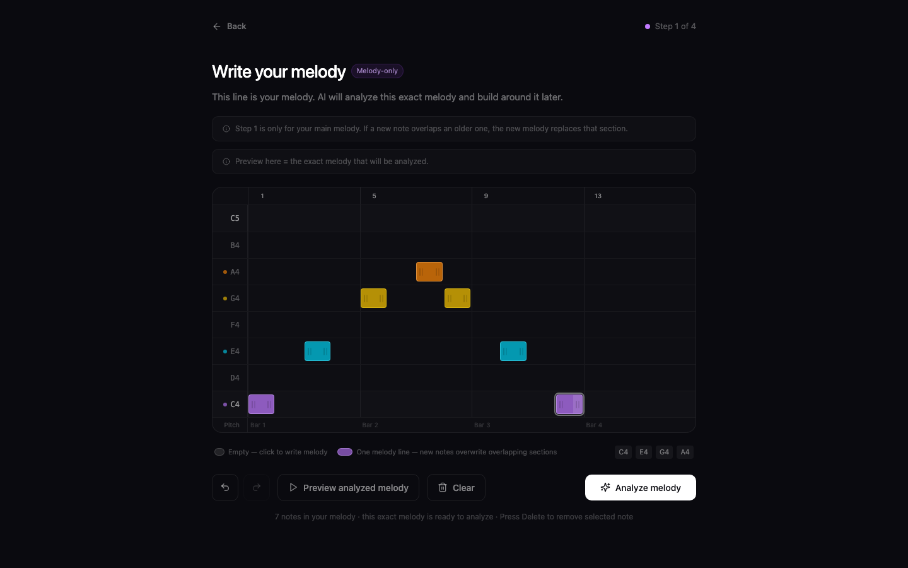
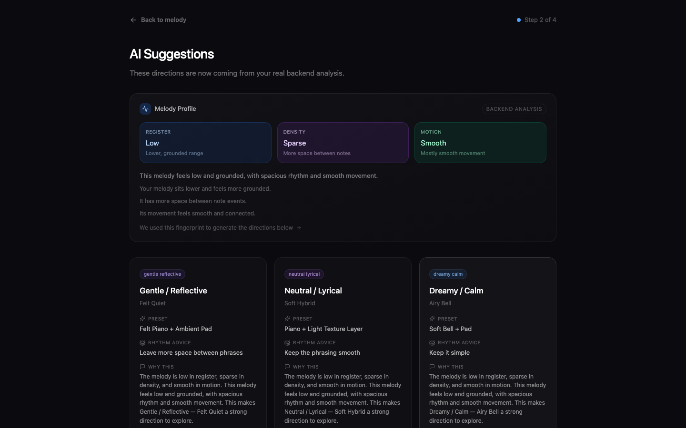
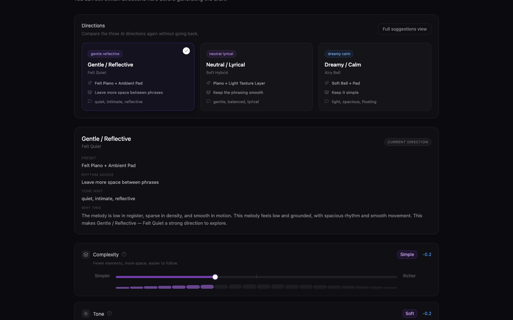

AI 音乐共创工具
零基础用户脑子里往往已经有一个旋律片段，缺的不是灵感，而是"接下来该怎么办"。这个项目要解决的，就是从那个很小的开头往下走的问题。
用户先在网格里写下一段短旋律，系统分析后给出几个可以比较的编曲方向。选定一个方向之后，还可以继续微调，直到觉得"这个是我想要的"为止。

项目背景
现有的 AI 音乐工具大多走同一条路：输入文字或关键词，系统直接返回几段完成品，用户试听后选一个。这个流程很快，但对零基础用户来说有一个根本问题——他不知道 AI 为什么给了这个结果，也不知道下一步该改哪里，最后很容易觉得"这不是我做的，是 AI 做的"。
围绕这个问题，我把产品方向定在三个核心指标上——控制感、参与感、创作主导感。后续所有的交互设计、模型选择和技术架构，都围绕这三个词展开。
为什么选择 Steering Interface
前期调研中，我梳理了已有文献对 AI 共创工具的两类交互模式的讨论：一类是"一次给很多结果让用户筛"，另一类是"把生成过程拆成可理解的阶段，让用户逐步参与"。前者效率高但容易削弱创作者的控制感，后者实现更复杂但更适合新手建立"这是我做出来的"这种感觉。
结合竞品分析和当前 AI 模块的实际能力，我选择了第二条路——做一个"引导式界面"（steering interface）：不是让用户输入一句话然后等系统产出成品，而是把创作过程拆成多个可控步骤，每一步都由用户做选择，AI 只负责提供选项和辅助。
核心流程

模型迭代与保留策略
项目经历了三轮主要的模型迭代。第一轮是基于 MAESTRO 数据集训练的 CNN baseline，从短旋律中预测三类中层属性：密度（音符疏密程度）、音区（旋律整体偏高还是偏低）、运动方式（旋律走向是平稳级进还是大跳跃）。这三个属性不直接面向用户，而是用来驱动后续的方向卡片——不同的属性组合会映射成不同的编曲建议。第二轮尝试了 sequence-based Transformer，将旋律作为时间序列而非二维图案处理。第三轮不再改模型本身，而是在输出层引入旋律特征摘要和动态建议逻辑，让不同旋律输入能对应更有区分度的方向卡片。
最终保留的不是分数最高的那个版本，而是最适合新手理解和比较的版本。下表中的数字是模型在验证集上的预测准确率。CNN baseline 在密度和运动方式上表现更稳定，而这两个属性恰好是驱动方向卡片差异化的关键——如果密度和运动预测不准，用户看到的三张卡片就会趋于雷同。
| 版本 | 输入方式 | 密度 音符疏密 |
音区 高低分布 |
运动 级进/跳进 |
保留 |
|---|---|---|---|---|---|
| CNN baseline | 旋律矩阵 [32, 37] | 0.657 | 0.946 | 0.606 | 保留 |
| Transformer | token 序列 [32] | 0.536 | 0.958 | 0.527 | 未保留 |


5 位零基础用户的测试
在原型接入真实后端之前，我先针对 5 位没有音乐背景的参与者做了一轮以创作者视角为核心的可用性测试，每人完成 3 个核心任务：输入旋律、比较 AI 方向、微调并保存版本。
这五个问题在下一轮原型修订中被集中修正，确保后续工程接入不是在糟糕的交互上硬叠技术。
从原型到可运行 Demo
项目最终形成了一条完整的本地闭环：用户在前端网格里输入旋律并即时听到声音；点击 Analyze 后，旋律被送到 FastAPI 后端，预处理成与训练阶段一致的格式，由保留模型完成分析；分析结果经建议生成层映射为方向卡片，返回前端渲染特征摘要、方向比较和微调控件；选定方向后，用户可以在浏览器内通过 Tone.js 听到一版带有 AI 支撑层的可播放草稿。
这不是一个生产级产品，但每一步的输入、分析和输出都是真实发生的。
当前边界
后端分析目前只处理单线旋律。草稿预览仍是浏览器端的合成器音色，不是最终的高保真多轨编配。微调控件影响声音的颗粒度有限。这些都是真实的工程边界，也是后续可以继续推进的方向。
我在这个项目中做了什么
从问题定义、文献梳理、交互方案探索，到模型训练与保留策略制定，再到 Figma Make 原型设计、5 人可用性测试、FastAPI 后端搭建和前后端联调——整个项目由我独立完成。
- 交互概念探索
- 高保真原型
- 旋律输入编辑器
- 方向卡片与微调控件
- CNN 旋律分析模型
- 动态建议生成逻辑
- FastAPI 后端
- Tone.js 草稿合成
- 文献综述
- 竞品分析
- Creator Study（n=5）
- 迭代修订计划